Peters Dome ice–rock avalanche, 13 September 2023
Denali National Park and Preserve, Alaska. Data container built with gaia-cli conventions for the event studied in Toney et al. (2026), JGR Earth Surface, doi:10.1029/2025JF008577. The force-time function, SHALTOP run and source/deposit outlines are the published results from the USGS data release, plotted as released, not recomputed here: doi:10.5066/P13WIS6X.
2023-09-14 02:06:49
origin (UTC)
6.1 × 10⁶ m³
volume
0.143 / 1.520 km²
source / footprint
> 60 m/s
peak speed
48
seismic stations
31
infrasound sensors
Stations
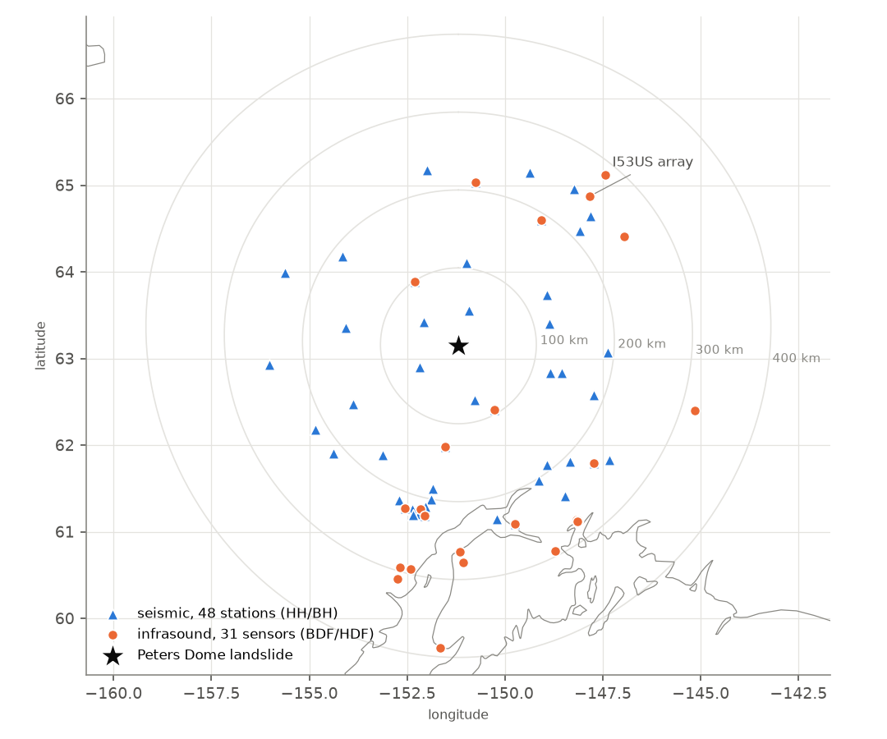
stations/seismic, stations/infrasound.Station table
| type | station | channel | distance (km) | back azimuth (°) |
|---|---|---|---|---|
| infrasound | AK.CUT.EP | BDF | 95.1 | 330.5 |
| infrasound | AK.CHUM.EP | BDF | 99.4 | 145.2 |
| infrasound | AK.SKN.EP | BDF | 131.1 | 7.5 |
| infrasound | AK.NEA2.EP | BDF | 192.1 | 213.8 |
| infrasound | AK.MLY.EP | BDF | 211.2 | 186.1 |
| infrasound | AV.SPCP | BDF | 215.5 | 13.1 |
| infrasound | AV.SPWE | BDF | 220.4 | 18.2 |
| infrasound | AV.SPU | BDF | 223.5 | 11.3 |
| infrasound | AK.M23K.EP | BDF | 233.8 | 311.7 |
| infrasound | AK.RC01.EP | BDF | 241.4 | 342.3 |
| infrasound | IM.I53H4 | BDF | 250.8 | 221.9 |
| infrasound | IM.I53H5 | BDF | 251.2 | 221.7 |
| infrasound | IM.I53H8 | BDF | 251.5 | 221.9 |
| infrasound | IM.I53H6 | BDF | 251.7 | 221.8 |
| infrasound | IM.I53H7 | BDF | 251.7 | 221.9 |
| infrasound | IM.I53H3 | BDF | 251.8 | 222.1 |
| infrasound | AK.HDA.EP | BDF | 252.1 | 238.0 |
| infrasound | IM.I53H1 | BDF | 252.3 | 221.7 |
| infrasound | IM.I53H2 | BDF | 252.8 | 221.9 |
| infrasound | AK.CAPN.EP | BDF | 264.9 | 359.6 |
| infrasound | AV.BATI | HDF | 273.1 | 326.2 |
| infrasound | AV.BAEI.01 | HDF | 275.5 | 325.9 |
| infrasound | AV.BAIS.01 | HDF | 275.6 | 326.3 |
| infrasound | AV.KENI.01 | HDF | 279.2 | 358.8 |
| infrasound | AK.POKR.EP | BDF | 285.9 | 221.5 |
| infrasound | AV.WHTR.01 | HDF | 293.6 | 335.0 |
| infrasound | AV.RDT | BDF | 293.8 | 12.1 |
| infrasound | AV.RDDF | BDF | 295.4 | 14.8 |
| infrasound | AV.RDSO | BDF | 311.0 | 14.6 |
| infrasound | AK.HARP.EP | BDF | 319.0 | 287.8 |
| infrasound | AK.HOM.EP | BDF | 389.5 | 3.4 |
| seismic | AK.KTH | BH? | 47.3 | 196.5 |
| seismic | AK.CAST | BH? | 54.2 | 123.8 |
| seismic | AK.PPLA | BH? | 57.7 | 60.8 |
| seismic | AK.L22K | BH? | 72.3 | 343.0 |
| seismic | AK.CUT | BH? | 95.1 | 330.5 |
| seismic | AK.CHUM | BH? | 99.4 | 145.2 |
| seismic | AK.BPAW | BH? | 106.8 | 185.5 |
| seismic | AK.RND | BH? | 120.5 | 257.1 |
| seismic | AK.WAT7 | BH? | 123.8 | 287.4 |
| seismic | AK.MCK | BH? | 130.1 | 240.8 |
| seismic | AK.SKN | BH? | 131.1 | 7.5 |
| seismic | AK.WAT1 | HH? | 138.4 | 285.9 |
| seismic | AK.K20K | BH? | 146.6 | 98.0 |
| seismic | AK.L20K | BH? | 156.0 | 60.4 |
| seismic | AK.M20K | BH? | 172.7 | 34.5 |
| seismic | AK.J20K | BH? | 186.1 | 126.8 |
| seismic | AK.WAT6 | BH? | 186.6 | 291.2 |
| seismic | AV.STLK | BH? | 186.6 | 10.0 |
| seismic | AK.NEA2 | BH? | 192.1 | 213.8 |
| seismic | AK.GHO | BH? | 192.7 | 323.7 |
| seismic | AK.DHY | BH? | 192.7 | 274.0 |
| seismic | AV.SPBL | BH? | 200.5 | 10.2 |
| seismic | AT.PMR | BH? | 203.3 | 329.3 |
| seismic | AK.SAW | BH? | 209.7 | 316.6 |
| seismic | AV.SPCG | BH? | 211.1 | 11.5 |
| seismic | AK.MLY | BH? | 211.2 | 186.1 |
| seismic | AK.WRH | BH? | 212.5 | 227.3 |
| seismic | AV.SPNN | BH? | 213.3 | 20.9 |
| seismic | AK.M19K | BH? | 215.2 | 48.6 |
| seismic | AV.SPCP | BH? | 215.5 | 13.1 |
| seismic | AK.L19K | BH? | 216.3 | 58.6 |
| seismic | AV.SPBG | BH? | 219.0 | 15.8 |
| seismic | AV.SPCN | BH? | 220.3 | 13.1 |
| seismic | AV.SPWE | BH? | 220.4 | 18.2 |
| seismic | AV.N20K | BH? | 223.2 | 13.3 |
| seismic | AV.SPU | BH? | 223.5 | 11.3 |
| seismic | AV.SPCL | BH? | 225.4 | 14.9 |
| seismic | AK.FIRE | BH? | 228.9 | 347.6 |
| seismic | AK.I21K | BH? | 230.0 | 170.0 |
| seismic | AK.M23K | BH? | 233.8 | 311.7 |
| seismic | AK.CCB | BH? | 235.7 | 226.4 |
| seismic | AK.KNK | BH? | 239.5 | 324.9 |
| seismic | AK.J19K | BH? | 239.5 | 111.3 |
| seismic | AK.I23K | BH? | 240.3 | 202.6 |
| seismic | AK.RC01 | BH? | 241.4 | 342.3 |
| seismic | AT.TTA | BH? | 245.1 | 82.2 |
| seismic | AK.SCM | BH? | 247.0 | 308.0 |
| seismic | AK.MDM | BH? | 248.5 | 216.9 |
Seismic record section
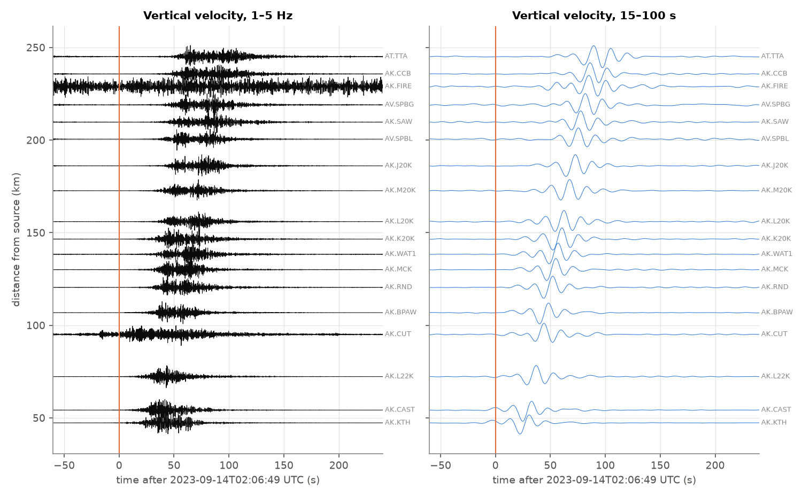
Infrasound record section
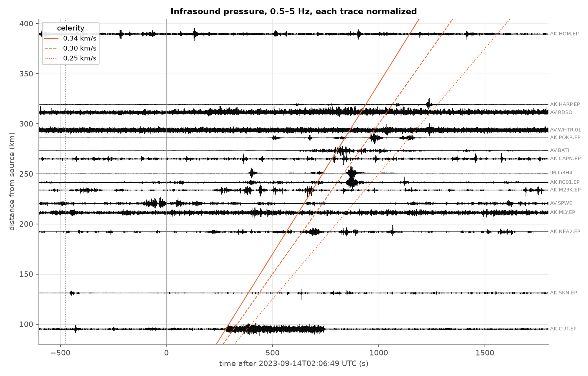
I53US array
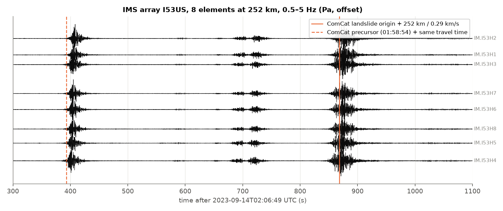
Force-time function (published)
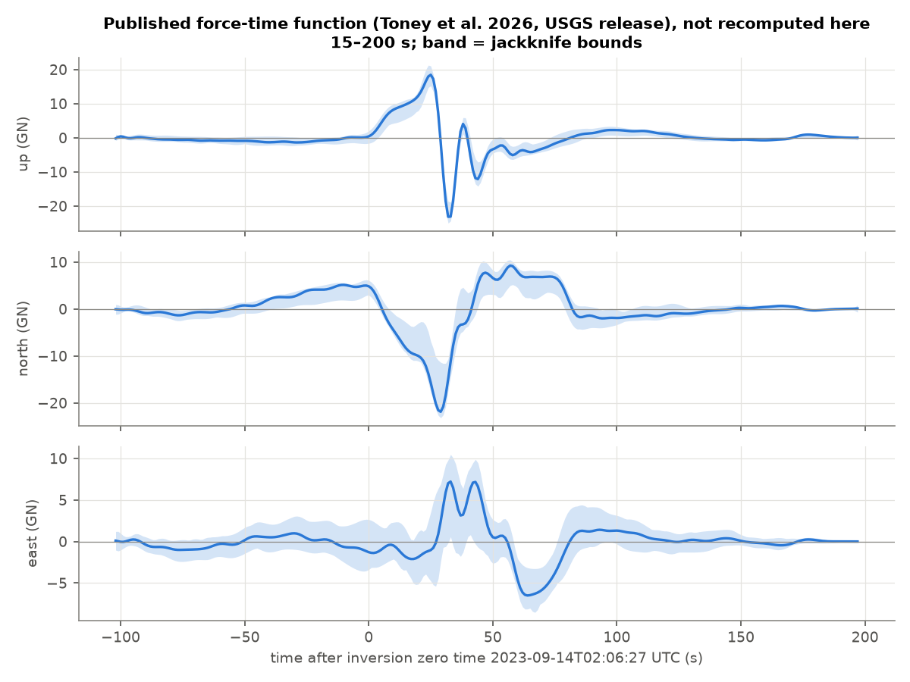
peters_dome_15-200_s_jackknife.csv). No force inversion has been run on the seismograms staged in this container. Shaded band: jackknife lower/upper bounds. Zero time 2023-09-14 02:06:27 UTC (release metadata).Sentinel-1 before / after
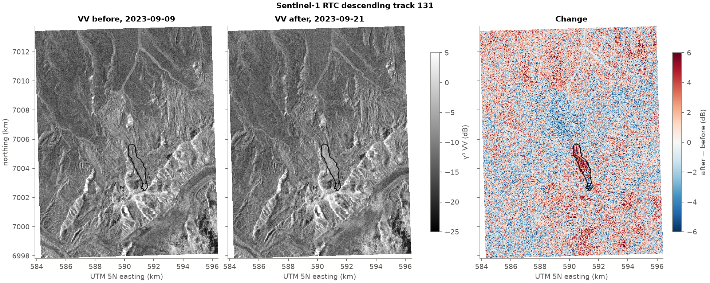
sentinel-1-rtc, last scene before and first after the event (12-day repeat, Sentinel-1A only in 2023). Outlines from the USGS release: solid = source + deposit, dashed = source.Sentinel-2 before / after
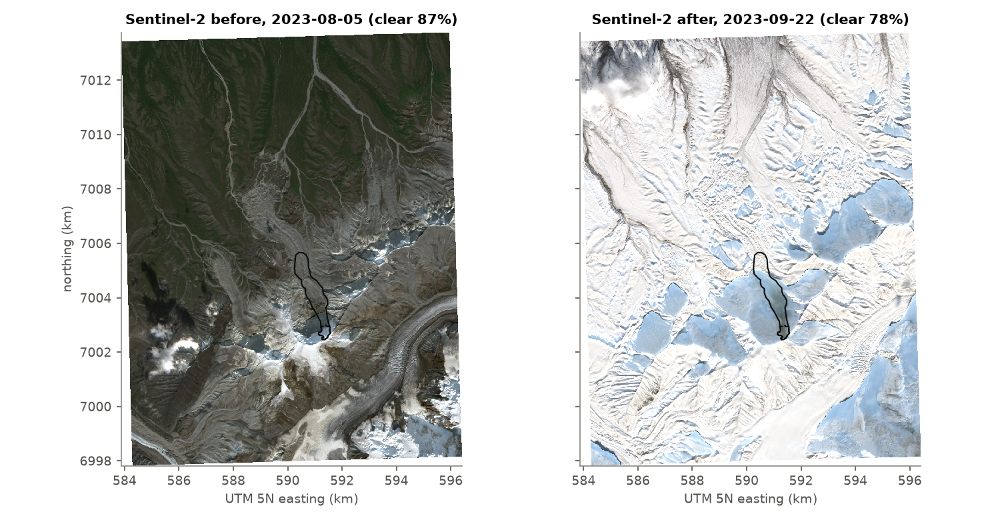
Flow model
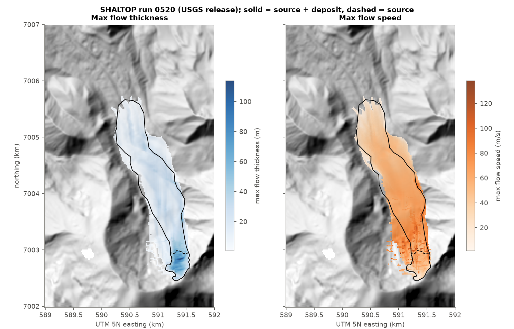
Glacier context
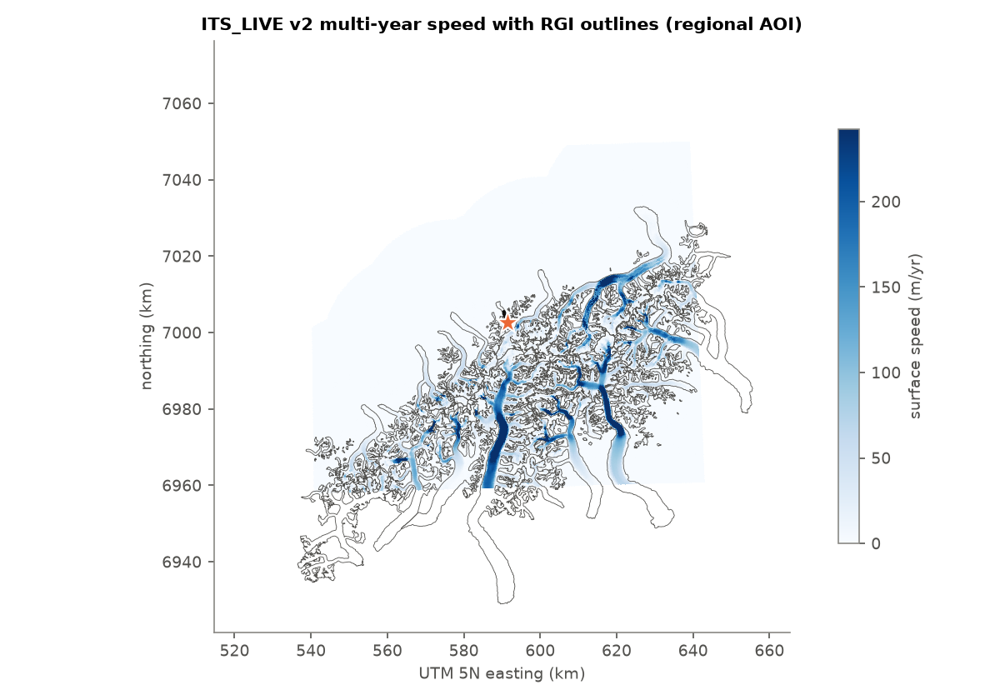
Antecedent weather
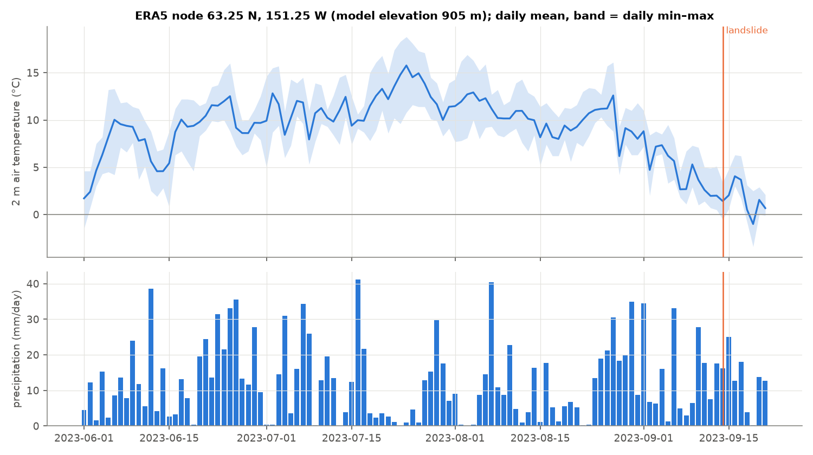
Atmosphere at event time
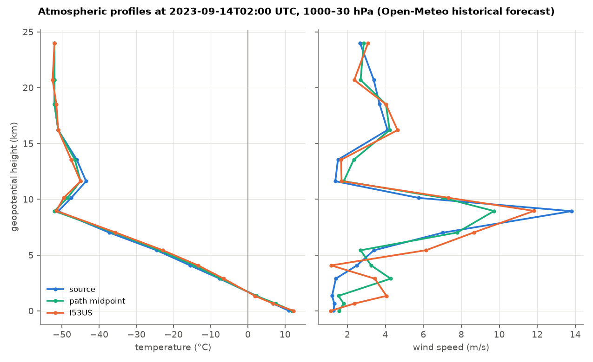
Groups in peters_dome.zarr for this build
datacube (y=1593, x=1252, epoch=2, depth=6) |
vectors/landslide_outlines (geometry=2, node=230) |
stations/seismic_lp (node=112, geometry=112, component=5, time=2400) |
stations/infrasound (geometry=31, time=84000, node=31) |
stations/seismic (geometry=48, component=3, time=48000, node=48) |
model/atmosphere_profiles (point=3, time=37, level=15) |
model/force_published (component=3, bound=3, time=300) |
model/shaltop (sim_time=81, y=251, x=151) |
vectors/geology/units (geometry=1092, part=1330, node=78717) |
vectors/geology/contacts_faults (geometry=2325, node=41011, part=2363) |
vectors/glacier/rgi (geometry=500, node=212264, part=1075) |
vectors/glacier/glims (geometry=1051, part=2647, node=929635) |
vectors/glacier/glathida (geometry=1, node=1) |
rasters/soil/soilgrids (depth=6, y=53, x=97) |
rasters/met/era5 (time=2712, y=4, x=9, nv=2) |
rasters/glacier/itslive_velocity (y=1040, x=973) |
rasters/optical/sentinel2 (time=24, y=1594, x=1253) |
rasters/optical/landsat (time=18, y=532, x=419) |
rasters/topography/arcticdem_mosaic (y=1637, x=1883) |
rasters/topography/copdem (y=505, x=433) |
rasters/topography/setsm_post_event (y=4307, x=2715) |
rasters/sar/sentinel1_rtc (time=8, y=1594, x=1253) |
One Zarr v3 store, gaia-cli layout; open with gaia_cli.io.open_datatree("data/peters_dome.zarr"). Reproduce: pixi run stage-all && pixi run report in
gaia-hazlab/gaia-peters-dome.